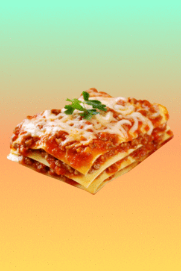

Lasagna

What is Lasagna?
Lasagna. One of the best pasta dishes you could have.
It's layered fillings of lasagna pasta noodles, ricotta cheese
and meat sauce makes this a perfect dinner for any occasion.
In this recipe, I will go over step by step on how to prepare each component of a lasagna,
from prepping the ingredients to cooking the actual dish.
Ingredients
- Lasagna Pasta Noodles
- Ricotta Cheese
- Marinara sauce
- Ground Beef
- Parmesean Cheese
- Oregano
- Parsley
- Shredded Cheddar Cheese
Cooking the pasta
- Take the lasagna pasta noodles and heat them up in a pot of boiling water and cook until just before al dente.
Make sure to season water with salt. Take out pasta and set aside to cool.
Preparing the Ricotta Cheese Mixture
- Take Ricotta cheese and parmesean cheese, and mix them up in a bowl until combined, then set aside
Meat Sauce
Place ground beef and place inside a heated pot with olive oil.
Make sure to season with salt and pepper